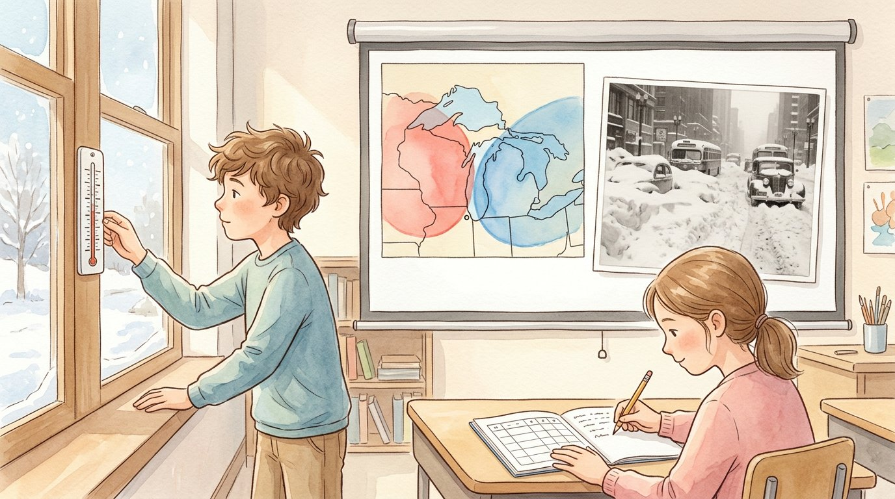

Grade 8 · Science · MS-ESS2-5
Sixty-five degrees, then twenty-three inches
A story about a spring-like day in January, the biggest snowstorm in Chicago's history two days later, and the air masses that collided over the city.
Sesenta y cinco grados, y después veintitrés pulgadas. Un cuento sobre un día de enero que parecía de primavera, la mayor nevada de la historia de Chicago dos días después y las masas de aire que chocaron sobre la ciudad.
Science words you will learn
Tap a green word to see what it means.
Toca una palabra verde para ver qué significa. Con la ayuda activada, verás también la definición en español.
The story
El cuento está en inglés. Pulsa «Listen to the story» para escucharlo y toca las palabras verdes cuando no entiendas una.
Ms. Novak, the social studies teacher, came to science class with an old photo: a Chicago street buried in snow, with cars and city buses stuck up to their windows. "My grandmother was in fourth grade that week," she said. "On Tuesday, January 24, 1967, Chicago reached 65 degrees. Kids played outside without coats. Two days later, the biggest snowstorm in the city's history began."
"The snow started at about five in the morning on January 26 and didn't stop until about ten the next morning," said Mr. Mensah. "By then, 23 inches had fallen. Winds of more than 50 miles per hour piled the snow into drifts up to six feet high." "Six feet!" said Daniel. "That's taller than me."
"How can it be 65 degrees and then a blizzard?" asked Selena. Mr. Mensah projected a weather map. "Weather happens when move and meet," he said. "An air mass is a huge body of air with about the same temperature and all through it. That week, warm, wet air from the Gulf of Mexico flowed north, and a cold, dry air mass came down from Canada."
"Where two air masses meet, there is a ," said Mr. Mensah. "The cold air is heavier, so it slides under the warm air and pushes it up. As the warm, wet air rises, it cools, and its water vapor turns into clouds and snow."
"A strong formed to the south and pulled the air masses into each other," he went on. "In Chicago, the dropped, the winds roared off Lake Michigan, and the snow fell up to two inches an hour."
"Didn't anybody warn them?" asked Elías. "The said snow," said Ms. Novak, "but only about four inches at first. Forecasters had less data in 1967: fewer weather stations, no weather radar like today's and only the first weather satellites."
For the rest of the week, the class collected their own data three times a day: temperature, air pressure, wind direction and clouds. On Thursday, the pressure dropped, the wind turned to the south, and the air felt damp. "A front is coming," said Athena. That night, it rained.
Ms. Novak smiled. "My grandmother said the best part was that school was closed for two days." Sophia wrote in her notebook: Weather is what happens when two kinds of air argue. The data can tell you who is winning.
Glossary
- air mass
- A huge body of air with about the same temperature and humidity all through it.
- masa de aire: Una enorme cantidad de aire con más o menos la misma temperatura y humedad en todas sus partes.
- front
- The boundary where two air masses with different temperatures meet. Fronts often bring storms.
- frente: El límite donde se encuentran dos masas de aire de temperaturas distintas. Los frentes suelen traer tormentas.
- humidity
- The amount of water vapor in the air.
- humedad: La cantidad de vapor de agua que hay en el aire.
- air pressure
- The push of the air above us. Falling pressure often means a storm is coming.
- presión atmosférica: El empuje del aire que está sobre nosotros. Cuando la presión baja, a menudo se acerca una tormenta.
- low-pressure system
- An area where air rises and the pressure is lower than around it. It pulls in air masses and often brings clouds, rain or snow.
- sistema de baja presión: Una zona donde el aire sube y la presión es más baja que alrededor. Atrae masas de aire y suele traer nubes, lluvia o nieve.
- forecast
- A prediction of the weather, based on data and models.
- pronóstico: Una predicción del tiempo, basada en datos y modelos.
Questions
Choose the correct answer. If you make a mistake, the story shows you where the answer is.
Elige la respuesta correcta. Si te equivocas, el cuento te muestra dónde está la respuesta.
-
Question A. How much snow fell in Chicago in the blizzard of 1967?
¿Cuánta nieve cayó en Chicago en la ventisca de 1967?
From about 5 a.m. on January 26 to 10 a.m. the next day, 23 inches of snow fell.
-
Question B. What two air masses met over Chicago that week?
¿Qué dos masas de aire se encontraron sobre Chicago esa semana?
Warm, wet air flowed north from the Gulf of Mexico and cold, dry air came down from Canada.
-
Question C. What happens at a front where cold air meets warm air?
¿Qué pasa en un frente donde el aire frío se encuentra con el aire cálido?
Cold air is heavier, so it pushes the warm, wet air up. As it rises, it cools, and its water vapor makes clouds and snow.
-
Question D. What did the low-pressure system do?
¿Qué hizo el sistema de baja presión?
The low pulled the air masses together; the pressure dropped, the winds roared and the snow fell fast.
-
Question E. Why was the 1967 forecast too low?
¿Por qué el pronóstico de 1967 se quedó corto?
In 1967 there were fewer weather stations, no radar like today's and only the first weather satellites.
Challenge: explain your thinking
Collect data as evidence
For three days, record the temperature, the air pressure (from a weather app or a barometer), the wind direction and the clouds. Did the weather change? Use your data as evidence to explain whether an air mass or a front moved through.
Reúne datos como evidencia. Durante tres días, anota la temperatura, la presión atmosférica (de una aplicación del tiempo o un barómetro), la dirección del viento y las nubes. ¿Cambió el tiempo? Usa tus datos como evidencia para explicar si pasó una masa de aire o un frente.
Answer in your notebook or talk it over with a classmate. Use evidence from the story.
Responde en tu cuaderno o coméntalo con un compañero. Usa evidencia del cuento.
Check your thinking
Look for changes that happen together. Falling pressure, more clouds and a change in wind direction often mean a front is coming. A big drop in temperature after rain or snow, with winds from the north or northwest, suggests a cold air mass arrived. Steady pressure and clear skies for days usually mean the same air mass is staying over you.